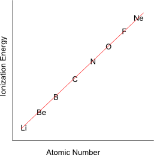
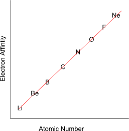

Several of the Periodic Trends have exceptions and/or inconsistencies. To have really mastered periodic trends, you must also understand these exceptions
This is the easiest of the exceptions. We have said that electronegativity increases to the right. This is true except that the trend does NOT include the noble gases. That means that fluorine has the highest electronegativity, not Ne or He. This is because the definition of electronegativity contains the phrases "in a covalent bond." Since the noble gases don't bond, they don't have electronegativities.
It should be noted that a few of the noble gases have been forced to bond (at high temperture and high pressure with fluorine). You may find tables that, therefore, list values for the electronegativity of Xe and Kr, but these are not terribly important values to know
If you were to graph Ionization Energy v. Atomic number for the elements in the second period (row) of the table, you would expect something that looks like this
Note: that Boron has a lower Ionization energy than Beryllium and that oxygen's ionization energy is lower than nitrogen's.
The obvious question is: why?
The answer has to do with electron configurations. The electron configuration of nitrogen is 1s22s22p3, a stable, half-filled structure.
Oxygen has an electron configuration of 1s22s22p4 --one electron beyond stable. So, taking an electron from nitrogen would make it less stable,
while taking an electron from oxygen would make the atom more stable. Therefore, it is easier to steal an electron from an oxygen atom (creating stability)
than it is to steal an electron from nitrogen (destroying stability).
This is true at every point comprised of a stable atom and an atom that is one electron beyond stable (Be/B, N/O, etc.)
If you were to graph Electron Affinity v. Atomic number for the elements in the second period (row) of the table, you would expect something that looks like this
Note that nitrogen's electron affinity is lower than carbon's and that Neon's is not only lower than fluorine's, but is actually lower than lithium's.
Again, the answer has to do with electron configurations. The electron configuration for carbon is 1s22s22p2,
one electron short of a stable half-filled shell.
The electron configuration of nitrogen is half-filled and stable -- 1s22s22p3.
When an electron is added to carbon, making it stable, we get out extra energy (sort of a reward for creating stabilty).
When an electron is added to nitrogen, making it unstable, we get out less energy (a punshiment of sorts).
When an electron is added to neon, we destroy the very great stability of a noble gas and the electron is added to the next
higher energy level (not as stable). As a result we get out very little energy at all. In fact, most noble gases require us to put in energy to add an electron.